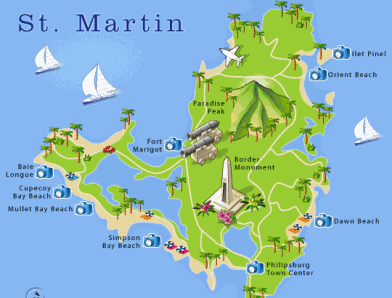
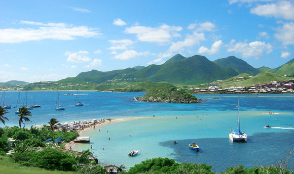

It was recently announced that St. Martin was recognized by FlipKey, TripAdvisor’s vacation rental company, as a Top Winter Travel Destination. The winners were selected based on traveler feedback and industry research. Criteria for consideration on the list included a variety of factors such as energetic culture, authentic cuisine, a variety of outdoor activities, and flawless weather. Included in the list are other warm weather locations such as: Playa Del Carmen, Mexico and Oahu, Hawaii.
Located 140 miles off the coast of Puerto Rico, the French side of the island of St. Martin is ideal for travelers looking for European flair mixed with the heartbeat of the Caribbean. With average temperatures ranging from 85 degrees Fahrenheit during the day, and “cooling off” to 75 during the night this island features weather that cold-weather locales dream about for a winter getaway. Visiting in December-April allows you to experience the Arrowroot Festival and Carnival (the biggest party of the year), but you can find the best rates for hotels and flights during the quick May/June window.
Although English is spoken in most hotels, this island is very French (right down to the plethora of baguettes.) Speaking of baguettes, two staples of St. Martin are food and sun. Marigot is the capital of St. Martin and features the best food and shopping on the island. Visit the Marigot Market for local fruits, spices, meats, and fishes. You can also buy amazing hand-made crafts at the market. The restaurants lining Marina Port la Royale on the waterfront (including fan favorites Le France and Tropicana) offer delicious menus that make the Caribbean taste come alive.
The terrain has something for everyone. There are mountains, coves, bays, and beaches. The most popular and developed beach is Orient Bay. It is a fabulous spot for snorkeling, parasailing, jet skiing and more aquatic sports. With live music and a clothing optional policy, this beach is not for the prudes. For a more family-themed beach visit, check out Friar’s Bay that has much more swimmable, calm waters than the strong undertow featured at Orient Bay. For the hikers and adventurers, visit Loterie Farm and take a trip on their new zip line.
If you’re looking to get away this winter as artic temperatures take over the entire country, look no further than St. Martin for all the sun and sand you so desperately need.